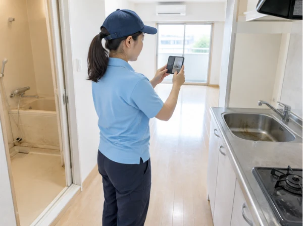

空室の写真見積り。汚れのアップの前に、部屋を一枚。
退去後のお部屋を見て、「どこから説明すればいいだろう」と迷うことがあります。気になるシミだけを大きく撮るより、まず部屋の全体と、そのシミがある場所を分けて写すと、相談の内容を整理しやすくなります。たくさん撮るより、何を相談したいかが伝わることを大切に。

まず全体。次に、気になる場所。
安全に立てる位置から、室内全体が分かる一枚を。床の広さ、家具や残置物の有無、設備の位置が伝わると、作業範囲の相談に役立ちます。続いて気になる場所を少し離れて撮り、最後に汚れや傷の近くを。全体と接写を組み合わせると、「どの部屋の、どの部分か」が分かります。
床のシミ、窓まわり、水まわりなど、場所ごとに写真をまとめてください。傷や変色かもしれないものを、清掃で必ず落ちる汚れと決めつける必要はありません。「いつからあるか分からない」も大切な情報です。
写真だけでは分からないことを、短く添える。
間取りとおおよその広さ、空室か使用中か、希望する清掃範囲、残っている荷物、作業を希望する時期を、分かる範囲でお知らせください。臭い、べたつき、水漏れなど、写真に写りにくい状態も言葉で添えられます。介護施設の居室か一般賃貸のお部屋かも分けてお伝えください。同じ広さでも料金の対象は同じではありません。
エアコンも相談する場合は、安全な位置から本体全体と、読める範囲の型式表示を。撮影のために脚立へ上がったり、カバーや配線を外したりする必要はありません。見えない情報は、見えないまま相談できます。
写さなくてよいものも、あります。
郵便物、契約書、氏名や住所の札、顔、家族写真、入居者の持ち物など、清掃の相談に不要な個人情報は写さないようにしてください。施設では、撮影できる範囲を管理担当者と確認し、利用者が写り込まない時間や向きを選びます。鍵や暗証番号、入室用コードの写真も、見積りのためには送らないでください。
濡れて滑りやすい場所、破損した床、電気設備の近くへ無理に入って撮らないでください。撮れない場所は文章だけで構いません。写真のために危険を増やさないことが先です。
写真を送っただけで、発注にはなりません。
写真では分からない床材や設備の状態、隠れた汚れもあります。追加の確認や現地での確認が必要な場合を含め、対応できる範囲と正式な金額を確認してから、ご依頼をご検討ください。一般賃貸の空室は間取り・設備・作業範囲に応じたお見積りです。介護施設の居室料金をそのまま当てはめる案内ではありません。
まずは相談ページで内容を整理できます。このページから写真が自動送信されることはありません。写真の受け渡し方法は、相談先の案内に沿ってご確認ください。
クリーンケア専用ダイヤル070-3220-4946
※営業・勧誘のお電話はご遠慮ください